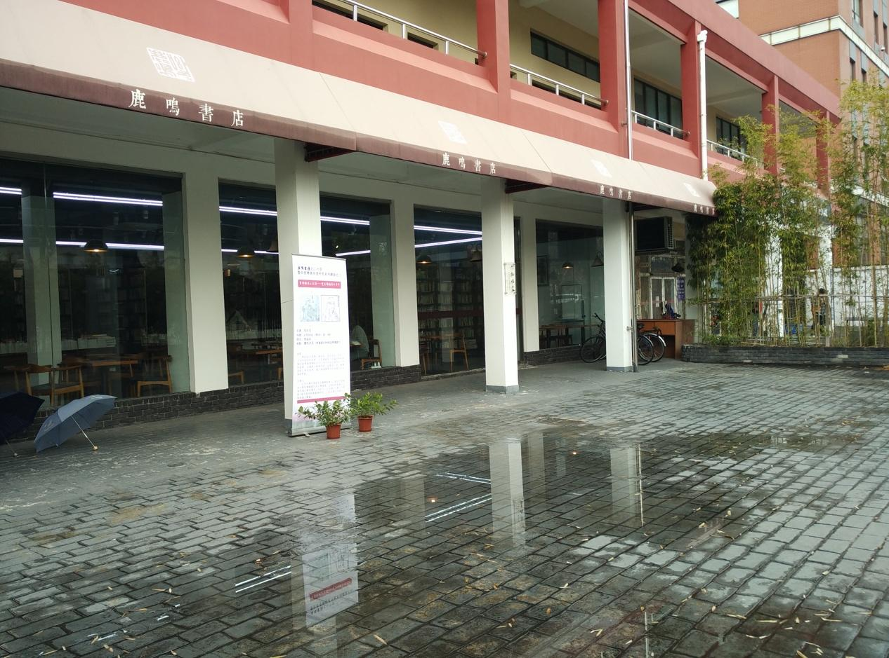
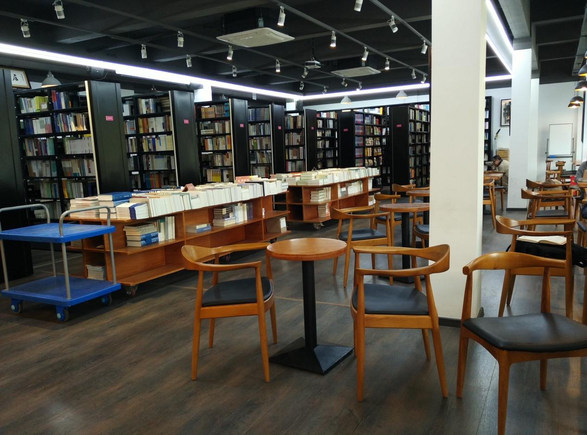
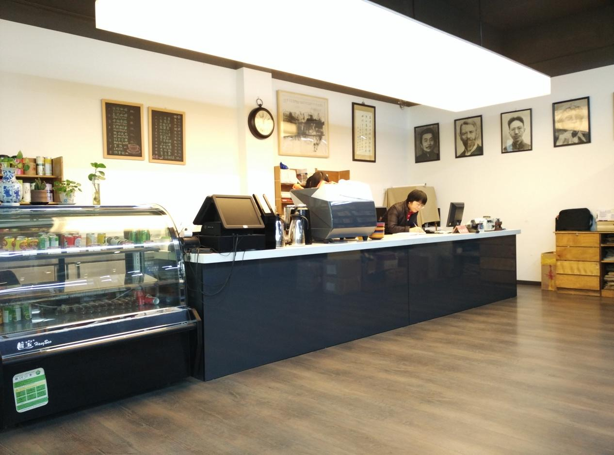
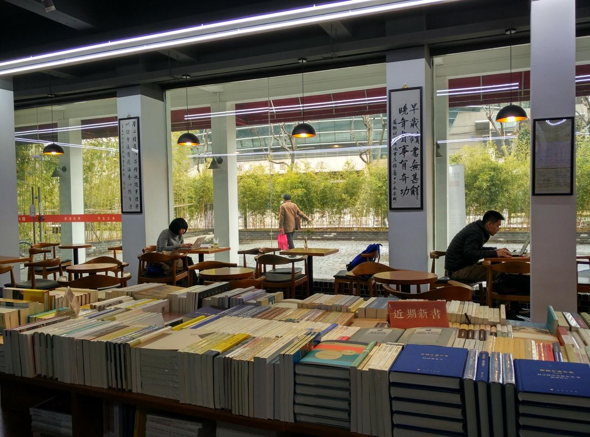
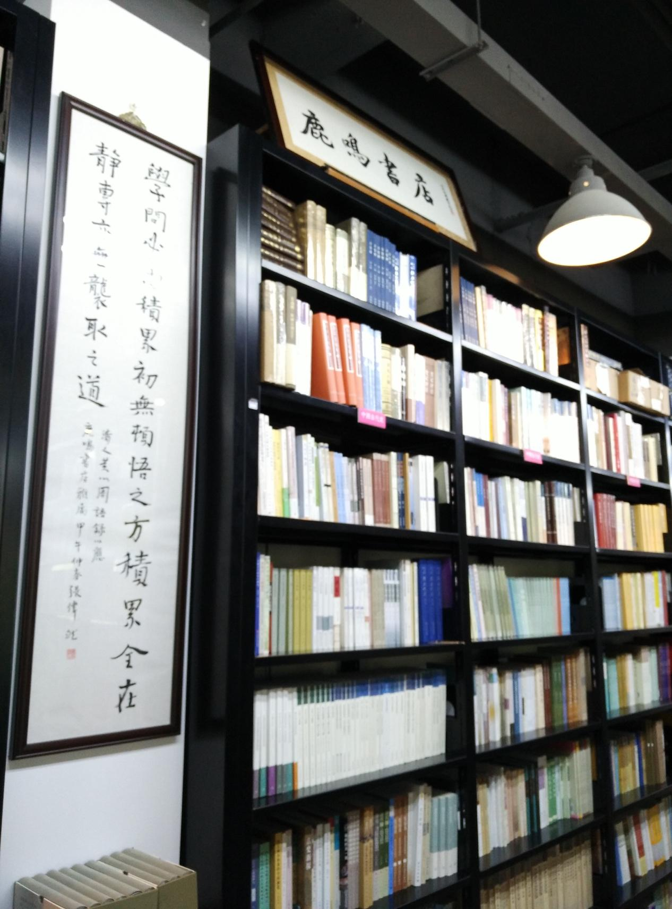
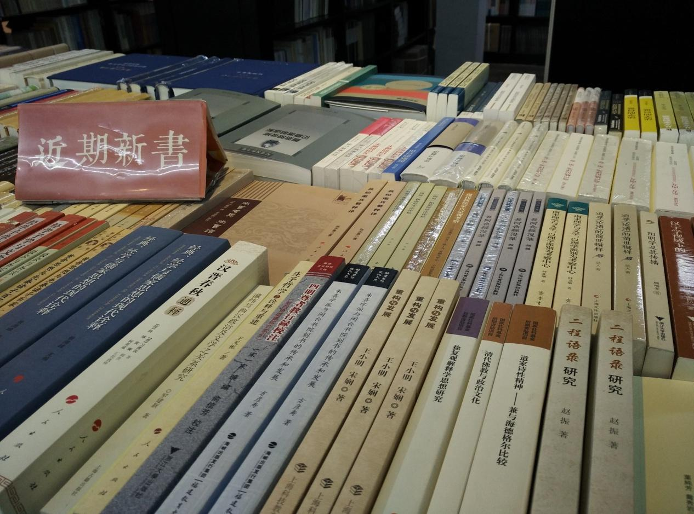

鹿鸣书店
八十年的复旦校园没有网络，图书馆资源也十分匮乏，国营新华书店的门市处成为复旦师生淘书的圣地。除了国营的新华书店外并无其他书店能满足日常读书的基本需求，而且由于版权公约的原因，大部分书籍还只是复印影印资料，缺乏系统性的教材和必要的工具书，这些都在一定程度上局限了教师学生的学术研究，但毫无疑问的是，彼时蔚然成风的读书氛围是复旦园里最动人的风景。
九十年代以后，由于市场经济的逐步开放，复旦周边的私营书店如雨后春笋般竞相出现，1996年由季羡林先生题写店名的心平书店开张，1997年由中文系两位研究生合办的鹿鸣书店在国权路开张，同年新文艺书店出现在北区武东路，一时间“买书、看书、写书，生生不息；卖书、印书、藏书，屡见不鲜”原本清贫的大学生活变得蓬勃而有朝气。
2000年以来，复旦周围又陆续出现了学人书店、三人行书店、学友书店、庆云书店、博师书店、志达书店、古月书店、复旦旧书店，以期适应复旦师生的读书需求。2005年百年校庆后，随着五角场地区的规划与发展，上海书城、万象书坊、淘吧等新兴书店也占据了复旦周围书店的一亩半分地。
复旦周围书店在90年代的后期蓬勃发展，不仅在数量上达到了20余家之多，同时在内容上也涉及文史哲、社科、考试、畅销、旧书、杂志及各类专业书籍等，在很大程度上基本满足了复旦师生的庞大用书，书店业发展之迅速和成熟，为繁荣复旦学术氛围助推了一臂之力。
网店的冲击和实体店经营成本的提高使得复旦周边书店的经营举步维艰，2007年左岸书店歇业引发了复旦师生对书店的关注和讨论。2008年起，复旦周边的多家书店陆续倒闭2011年6月，复旦大学南区经营17年之久的庆云书店宣布关张。
2013年鹿鸣书店也因租金过高而不得搬离原址，但万幸的是复旦大学对这家复旦师生都深有感情的书店伸出援手，在复旦南区学生公寓为其开辟了200平米的场地，并采取有条件的减免房租的措施，即分账模式，不收租金，而是从营业额中进行一定的分成，“如果当月没有营业额，学校就不拿钱”，极大的减轻了鹿鸣书店的经营压力。
如今的鹿鸣书店位于复旦南区学生宿舍，正大体育馆对面，占地200平米，除了继续专攻文史哲等专业书籍以外，还在孔夫子二手网上开设网上书店，线上线下同步售卖。此外，除了书籍业务以外，鹿鸣书店还借复旦师资和学人开办一系列人文讲座，前不久就连续开办了六场印度学与印度研究讲座。值得一提的是，相比较之前国权路60平米的占地，搬迁新址的敞宽鹿鸣为读者提供了读书自修的沙发和座椅，也提供饮品等服务。
  据书店老板顾振涛在接受记者采访时介绍，迁址后的鹿鸣是要在保证学术型定位的前提下，转型成一个独特的人文空间，继续用专业眼光选取纯粹的学术图书，并计划创办电子杂志、微信公众账号等，为新书发布、学术活动等服务，以建立鹿鸣自己的品牌，而不是简单效仿“书+咖啡”的“诚品模式”。
 采访手札：相比猫空将书籍当作辅助元素而言，鹿鸣则是将除书以外的其他一切当作是辅助元素，拓展书的空间和书的生命力，这是复旦人，是一群复旦人为了人文精神的坚守。就好像是说，这个世界不能没有书，所以复旦不能没有鹿鸣。